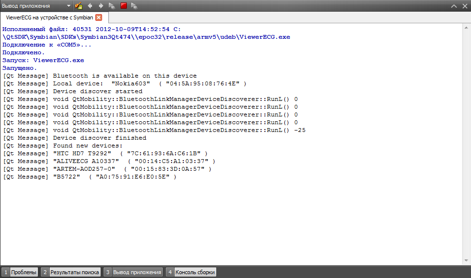

Сначала проверяем, доступен ли вообще bluetooth на устройстве с помощью QBluetoothLocalDevice. Если да, включаем его, делаем его видимым, и сканируем область на наличие устройств, и находим различные сервисы, предоставляемые активными bluetooth-устройствами.
/**
* Check if Bluetooth is available on this device,
* turn bluetooth on, read local device name,
* make it visible to others, initialize discovery
* agent to search for services.
* Then start a service discovery.
*/
void BluetoothModule::startDiscovery()
{
localDevice = new QBluetoothLocalDevice(this);
if (localDevice->isValid()) {
qDebug() << "Bluetooth is available on this device";
localDevice->setHostMode(QBluetoothLocalDevice::HostDiscoverable);
localDevice->powerOn();
localDevice->setHostMode(QBluetoothLocalDevice::HostDiscoverable);
qDebug() << "Local device: " << localDevice->name() << " ("
<< localDevice->address().toString().trimmed() << ")";
// Create a discovery agent and connect to its signals
discoveryAgent = new QBluetoothServiceDiscoveryAgent(this);
connect(discoveryAgent, SIGNAL(finished()),
this, SLOT(serviceDiscoverFinished()));
discoveryAgent->start();
qDebug() << "Service discover started";
}
else
qDebug() << "Bluetooth is not available on this device";
}
Когда обзор области завершится, сработает слот serviceDiscoverFinished(). Теперь мы можем получить список всех доступных сервисов.
/**
* Service discover finished. Get a list of services.
* Read information about the found services and print it.
*/
void BluetoothModule::serviceDiscoverFinished()
{
qDebug() << "Service discover finished";
listOfServices = discoveryAgent->discoveredDevices();
if (!(listOfServices.isEmpty())) {
qDebug() << "Found new services:";
for(int i = 0; i < listOfServices.size(); ++i)
qDebug() << "Device: "
<< listOfServices.at(i).device().name().trimmed()
<< " ("
<< listOfServices.at(i).device().address().toString().trimmed()
<< ") \n"
<< "Service: "
<< listOfServices.at(i).serviceName()
<< ", "
<< listOfServices.at(i).serviceDescription()
<< ", "
<< listOfServices.at(i).serviceProvider();
}
else
qDebug() << "No services found";
}
Тут в моем случае возникла проблема. В списке оказались все сервисы, предоставляемые другими телефонами и ноутбуками, которые оказались неподалеку, но о портативном кардиомониторе, работа с которым и была моей целью, никакой информации найдено не было. То есть QBluetoothServiceDiscoveryAgent не находит ни одного сервиса на нашем устройстве.
Так как сервис на кардиомониторе находиться отказывался, пришлось искать способ как-то обойти явный его поиск. Немного модифицировав код, прибегнем к следующему решению: выполним поиск не сервисов, а устройств, их предоставляющийх, с помощью класса QBluetoothDeviceDiscoveryAgent.
/**
* Check if Bluetooth is available on this device,
* turn bluetooth on, read local device name,
* make it visible to others, initialize discovery
* agent to search for devices.
* Then start a device discovery.
*/
void BluetoothModule::startDiscovery()
{
localDevice = new QBluetoothLocalDevice(this);
if (localDevice->isValid()) {
qDebug() << "Bluetooth is available on this device";
localDevice->setHostMode(QBluetoothLocalDevice::HostDiscoverable);
localDevice->powerOn();
localDevice->setHostMode(QBluetoothLocalDevice::HostDiscoverable);
qDebug() << "Local device: " << localDevice->name() << " ("
<< localDevice->address().toString().trimmed() << ")";
// Create a discovery agent and connect to its signals
discoveryAgent = new QBluetoothDeviceDiscoveryAgent(this);
connect(discoveryAgent, SIGNAL(finished()),
this, SLOT(deviceDiscoverFinished()));
discoveryAgent->start();
qDebug() << "Device discover started";
}
else {
qDebug() << "Bluetooth is not available on this device";
}
}
Напишем новый слот для сигнала об окончании обзора:
/**
* Device discover finished. Get a list of devices.
* Read information about the found devices,
* print to qDebug() a list of devices names and addresses and
* send it to GUI (QML), where user can select a prefered device.
*/
void BluetoothModule::deviceDiscoverFinished()
{
qDebug() << "Device discover finished";
listOfDevices = discoveryAgent->discoveredDevices();
if (listOfDevices.isEmpty())
setError("No devices found");
qDebug() << "Found new devices:";
for (int i = 0; i < listOfDevices.size(); i++) {
qDebug() << listOfDevices.at(i).name().trimmed()
<< " ("
<< listOfDevices.at(i).address().toString().trimmed()
<< ")";
setDevice(listOfDevices.at(i).name().trimmed() + " (" + listOfDevices.at(i).address().toString().trimmed() + ")");
}
}
Только таким образом удалось найти устройство. (ALIVEECG)

Отправим этот список в QML интерфейс, заполнив ListView, подождем пользовательского выбора Теперь нужно соединить QBluetoothSocket с QBluetoothServiceInfo. Но сервис-то мы не искали. То есть искали, но не нашли.
Оказывается, можно, зная физический адрес устройства, соединить сокет с сервисом, указав его тип и местоположение.
/**
* In GUI (QML) user select a device with index i.
* Create a new socket, using Rfcomm protocol.
* Socket connect to service on selected device,
* with Uuid Serial Port. Connect a socket's signals with slots.
*/
void BluetoothModule::deviceSelected(int i)
{
selectedDevice = listOfDevices.at(i);
qDebug() << "User select a device: " << selectedDevice.name() << " ("
<< selectedDevice.address().toString().trimmed() << ")";
socket = new QBluetoothSocket(QBluetoothSocket::RfcommSocket, this);
socket->connectToService(QBluetoothAddress(selectedDevice.address()),
QBluetoothUuid(QBluetoothUuid::SerialPort));
connect(socket, SIGNAL(error(QBluetoothSocket::SocketError)),
this, SLOT(socketError(QBluetoothSocket::SocketError)));
connect(socket, SIGNAL(connected()), this, SLOT(socketConnected()));
connect(socket, SIGNAL(disconnected()), this, SLOT(socketDisconnected()));
connect(socket, SIGNAL(readyRead()), this, SLOT(socketRead()));
}
Остается только отправлять анализатору данные, принимаемые с кардиомонитора:
/// Read data from device via socket.
void BluetoothModule::socketRead()
{
QByteArray recievedData = socket->readAll();
emit dataRecieved(recievedData);
}
P. S. Все рассмотренные классы работы с Bluetooth - часть Qt Mobility / Connectivity API, для их использования в .pro файле необходимо раскомментировать/дописать следующие строки:
CONFIG += mobility
MOBILITY = connectivity
Напоминаю, что для работы на Symbian смартфонах приложению необходимы дополнительные полномочия. В *.pro файл добавляем строку:
symbian:TARGET.CAPABILITY += NetworkServices LocalServices Location ReadUserData UserEnvironment WriteUserData ReadDeviceData WriteDeviceData
Чтобы запустить приложение на смартфоне, sis пакет необходимо подписать: www.symbiansigned.com